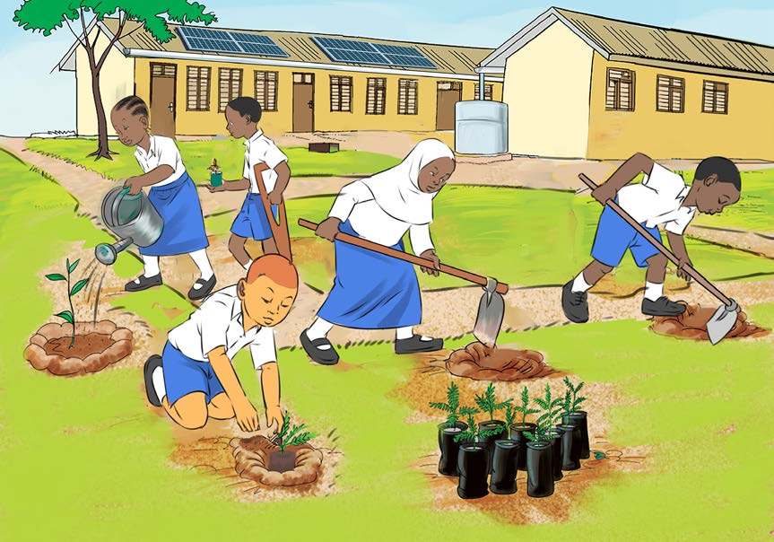

Hatua ya pili, ni kuchagua eneo lenye rutuba, kisha kulisafisha kwa kulima na kutifua kwa ajili ya kupanda miti, nyasi, na maua. Mimea mingine haihitaji kutifua ardhi kabla ya kuipanda, ila inahitaji kuchimba mashimo ya kupanda miche. Hata hivyo, endapo eneo ulilochagua halina rutuba ya kutosha, inapaswa kuboresha udongo kwa kuuchanganya na mbolea ya samadi au mboji kabla ya kupanda miche. Kielelezo namba 4 kinawasilisha wanafunzi wakipanda miti kwenye mashimo waliyoyaandaa.

Hatua ya tatu, inashauriwa kuchagua miche ya kupanda kwa kuangalia miche isiyo na magonjwa au isiyo dhaifu, kisha miche hiyo hupandwa. Hatua ya nne, ni kuitunza miche katika viunga kwa kumwagilia maji endapo kutakuwa